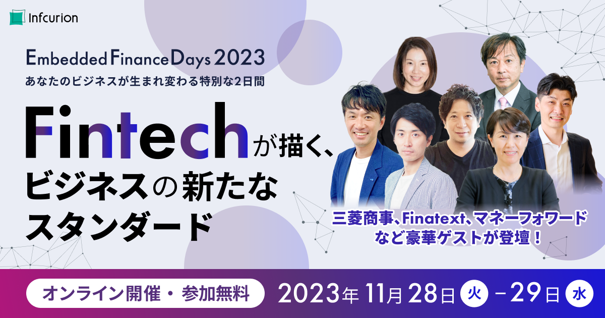

Embedded Finance（エンベデッド・ファイナンス/組込型金融）をテーマに、Fintechで事業を成長させるノウハウを共有するオンラインイベント「Embedded Finance Days 2023」を11月28日（火）～11月29日（水）の2日間にわたり開催します。
本イベントでは、鉄道、商社といった歴史ある企業から、新たなビジネスモデルで急成長しているスタートアップ企業まで各業界のトップランナーが集まり、自社の取り組みについて紹介するほか、国際的に注目を集めるCBDC(中央銀行デジタル通貨)について有識者を招いたパネルディスカッションを行うなど多彩なテーマの講演を全8講演配信します。
自社サービスに金融機能を組み込み、競合サービスとの差別化やユーザーの利便性向上を考えている方のほか、「新たな顧客体験やビジネス創出に関心のある方など、「Embedded Finance」に興味のある方は、どなたでも無料で参加可能です（事前登録制）。
「Embedded Finance Days 2023」開催概要
開催期日：2023年11月28日(火)〜11月29日(水)の2日間（両日共通10時00分〜18時00分開催）
開催方法：オンラインによるライブ配信
対象：
・自社サービスに金融機能を組み込み、競合サービスとの差別化やユーザーの利便性向上を考えている方
・「Embedded Finance」の最新動向・事例を知りたい方
・Fintechに興味・関心のある方
参加費：無料
参加方法：イベント公式サイトから事前登録（参加希望講演ごとに登録必須）
イベント公式サイト：https://event.infcurion.com/
主催：株式会社インフキュリオン
お問い合わせ：「Embedded Finance Days 2023」イベント事務局
e-mail：efd_info@infcurion.com
「Embedded Finance Days2023」の主なセッション
Day1-①「三菱商事が描く新しい金融サービスのかたち」
日時：11月28日（火）10:00～11:00
登壇者：
三菱商事株式会社 産業DX部門 サービスDX部長 石塚 真理 氏
株式会社インフキュリオン コンサルティング 執行役員副社長 森田 航平
これまでの幅広い知見を活用し、産業・企業・コミュニティと金融機能との融合によって社会課題の解決や新たな価値の創出を目指している三菱商事。 今回、三菱商事 産業DX部門サービスDX部長の石塚 真理氏をお招きし、なぜEmbedded Financeに注力されているのか、海外事例などをご紹介しながら今後の展望についてお話します。
お申し込みはこちら
https://us06web.zoom.us/webinar/register/WN_y9j5byHnSXK9ZuoYGSR1Wg
Day1-② 「メルカリが徹底する”顧客視点”のサービス設計とグループシナジーの創出」
日時：11月28日（火）12:00～13:00
登壇者：
株式会社メルペイ COO Fintech 兼 株式会社メルコイン COO Fintech 永沢 岳志 氏
株式会社インフキュリオン 代表取締役社長 丸山 弘毅
誰でもスマートフォン上で簡単に不要品を販売できるというユニークなユーザー体験を提供しているメルカリ。これまで様々な新サービスを展開しており、決済サービス「メルペイ」やクレジットカードサービス「メルカード」、仮想通貨サービス「メルコイン」などのFinTech領域にも拡大しています。これらのサービスを顧客と向き合いながらどのように立ち上げて、成長させているのでしょうか。また、サービスアプリに決済・与信・資産運用の3つの機能を組み込んだ循環型金融の価値提供の狙いや各種サービスにおけるシナジーがどのように生み出されているのか
についてお話します。
お申し込みはこちら
https://us06web.zoom.us/webinar/register/WN_6OaVAZoNQnmb1ODyUXKSSA#/registration
Day1-③ 「法人決済のトレンドと三井住友カードが仕掛けるサービス戦略」
日時：11月28日（火）15:00～16:00
登壇者：
三井住友カード株式会社 ビジネスマーケティング商品開発部 部長代理 井上 祐也 氏
株式会社インフキュリオン Embedded Fintech事業部 Winvoice部 マネジャー 百合川 真人
国内における法人決済は、これまでの商習慣から新たな仕組みの登場によってどのような変革が起きているのでしょうか。国内クレジットカードサービスを牽引している三井住友カードをお招きして、法人決済のこれまでの歩み（実態・課題）、同社の会員データから見える法人決済の動向、同社が掲げるビジョンや新たに推進しているサービスについてお話します。
▸本講演のお申し込みはこちら：
https://us06web.zoom.us/webinar/register/WN_s50dFUOJRpeQBM5elcK6Xg
Day1-④ 「Finatext×インフキュリオン 双方の視点から見た 「Embedded Finance」の未来像」
日時：11月28日（火）17:00～18:00
登壇者：
株式会社Finatext 保険事業責任者 河端 一寛 氏
株式会社インフキュリオン 執行役員 Embedded Fintech事業部長 末澤 慶海
次世代金融インフラの提供を通して保険や証券の組み込み型金融を実現するFinatextグループと 金融サービスを機能単位で提供し、あらゆるサービスにFintechを組み込み、数多くの企業の「Embedded Finance」を支援してきたインフキュリオン。日本の「Embedded Finance」を牽引し、保険や決済などさまざまな業界のアップデートに挑戦する両社の取り組みに焦点を当てたパネルディスカッションを行います。
お申し込みはこちら
https://us06web.zoom.us/webinar/register/WN_y9mHbLQ1Q6qv8-K8Qo2zhg
Day2-① 「JR西日本が目指す “デジタル版社会インフラ” としてのWESTERウォレット（仮称）のミライ」
日時：11月29日（水）10:00～11:00
登壇者：
西日本旅客鉄道株式会社 デジタルソリューション本部 WESTER-X事業部 次長 内田 修二 氏
株式会社インフキュリオン Embedded Fintech事業部 ビジネス開発2部 部長 伊與 隆博
スマートフォンを使った新たな決済サービスの展開を目指し、プロジェクトを推進しているJR西日本。 決済データを活用し、不動産や商業施設といった移動に連動しない事業の更なる成長や新たなサービスの創出につなげることを目的としており、注目を集めています。リアル×デジタルの豊富なタッチポイント、サービス、データ、そして西日本エリアを中心とした地域社会と強固なつながりを持つ同社が、どのようなミライを目指しているのかお話します。
お申し込みはこちら
https://us06web.zoom.us/webinar/register/WN_bSqaKasRReKX4mR7IPYNfw
Day2-② 「進化を続けるマネーフォワードのFintech戦略」
日時：11月29日（水）12:00～13:00
登壇者：
株式会社マネーフォワード ビジネスカンパニー Fintech事業推進本部 本部長 赤星 諒太 氏
株式会社インフキュリオン 執行役員 Xard事業部長 吉中 慎
「SaaS×Fintech」領域で、国内で多くのユーザー基盤とプロダクトラインナップを提供するマネーフォワード。 2021年9月に法人向けプリペイドカード「マネーフォワードビジネスカード」を提供し、BtoB領域でのキャッシュレス化にいち早く取り組んできました。BtoB領域での既存サービスに金融機能の組み込みを進める同社の戦略と法人カード事業の最新動向についてお話します。
お申し込みはこちら
https://us06web.zoom.us/webinar/register/WN_AMnNlzo-QjOecuvXSQzpUA
Day2-③「Embedded CBDCの作り方：付加価値はどこから生まれるか？」
日時：11月29日（水）15:00～16:00
登壇者：
BI金融経済研究所株式会社 研究主幹 副島 豊 氏
森・濱田松本法律事務所 パートナー弁護士
一般社団法人Fintech協会 エグゼクティブ・アドバイザー 堀 天子 氏
株式会社インフキュリオン 代表取締役社長 丸山 弘毅
中央銀行デジタル通貨（CBDC）は、どのような価値を社会にもたらすのでしょうか。 CBDCをどのように一般事業サービスに組み込むか、法的安定性をどう担保するか、 インフラ設計は？クロスボーダー送金は？他の電子マネーとの関係は？エコシステムは生まれるのか？企業間の大口決済は？ 本セッションでは、Embedded CBDCによる新たなサービスの誕生やビジネスモデルの進化によって、日本の未来がどう変わっていくのかを、2名のパネリストをお招きしてフリーダムにお話します。
お申し込みはこちら
https://us06web.zoom.us/webinar/register/WN_RPHnsdAZT7Wrk6iu1VwZXg
Day2-④「インフキュリオンのサービス紹介と導入事例」
日時：11月29日（水）17:00～18:00
登壇者：
株式会社インフキュリオン Embedded Fintech事業部 ビジネス開発2部 部長 伊與 隆博
株式会社インフキュリオン Embedded Fintech事業部 Winvoice部 マネジャー 百合川 真人
インフキュリオンは、決済領域を起点に事業者／消費者の視点で様々なサービスと金融機能をつなぎ、お金にまつわる体験の向上に取り組んでいます。オリジナルPay構築やブランドカード発行、 請求書支払いなどの各種サービス戦略や業界における提供価値の位置づけ、これから開発を進める新たなサービスの構想についてお話します。
お申し込みはこちら
https://us06web.zoom.us/webinar/register/WN_xLnZosEET8uVYnMRpiScTQ
※その他のセッションについては、決まり次第順次「Embedded Finance Days 2023」公式サイトにて公開します。
※セッション内容及び登壇者は予告なく変更される場合があります。あらかじめご了承ください。